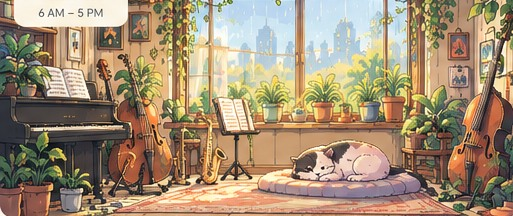

My Jazz Room
Good to see you. Let's make music.
Today's Practice
Daily Jazz Warm-Up
15 min · 4 exercisesQuick Access
Long-term goal
Play confident solos over ii–V–I progressions
Explore
CommunityFeatured
Jazz harmony charts
11 original blues, bossa, rhythm, songbook and modal studies
Browse by Category
Create Routine
Exercises
Local prototype only. Publishing requires Supabase and authentication.
Practice
No audio loaded12-Bar Jazz Blues in F
Swing · 4/4Tap a measure to highlight it. Chart only; audio isn't synchronized yet.
Practice instructions
Play guide tones (thirds and sevenths) through the 12-bar blues. Add a chorus of chord-tone improvisation.
Backing recording
No recording selected. The finished product will support original mixed recordings and synchronized recorded instrument stems.
Recording and advanced audio
FutureMix stem volumes, preserve pitch while changing tempo, transpose recorded audio, and fade melody: available after verified recorded-audio processing is implemented.
Progress
Your jazz companionMy Jazz Journey
Piano · Learning jazz
Choose your jazz cat
Changes your room and profileAll eight cats are free. Pick a kitten, slim adult, or a rounder senior. Tap to choose. Your selection is stored on this device until account sync is implemented.
Practice this week (sample)
Practice calendar
Saved routines
10 minutes
Achievements
First practice · 3-day streak · First routine
Friends and challenges
Preview · Share goals and community challenges in a future release.